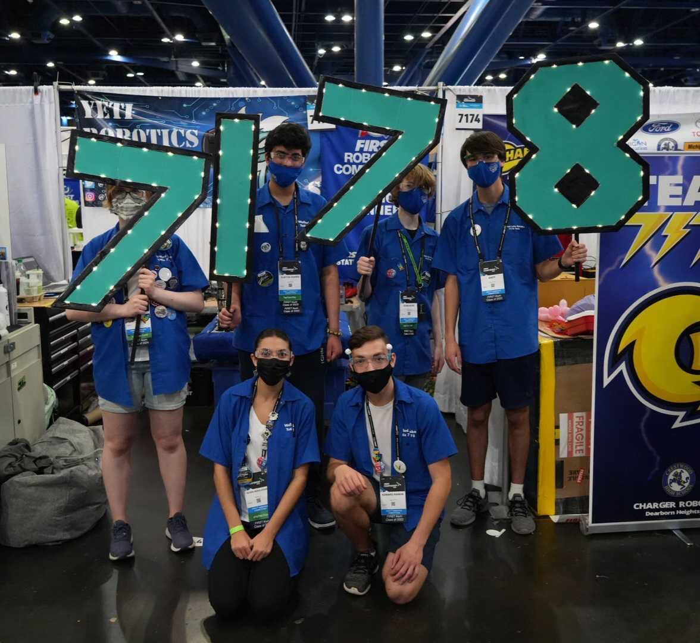
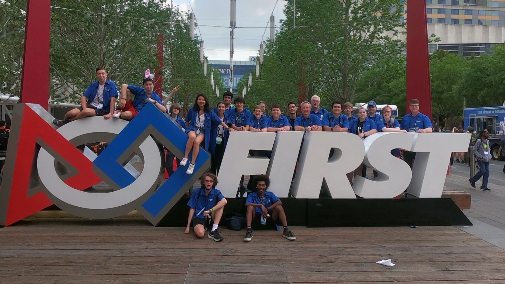
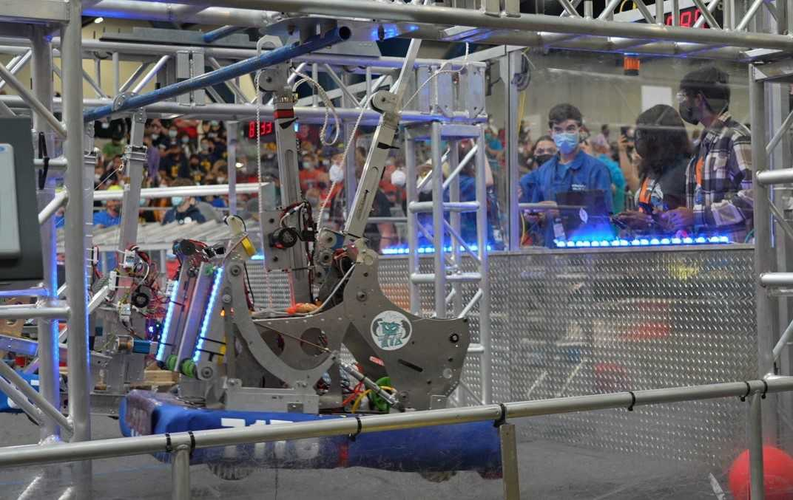
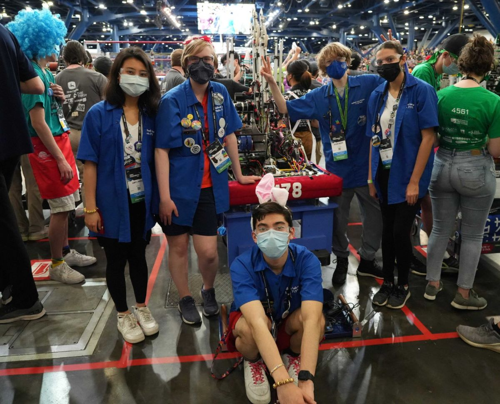
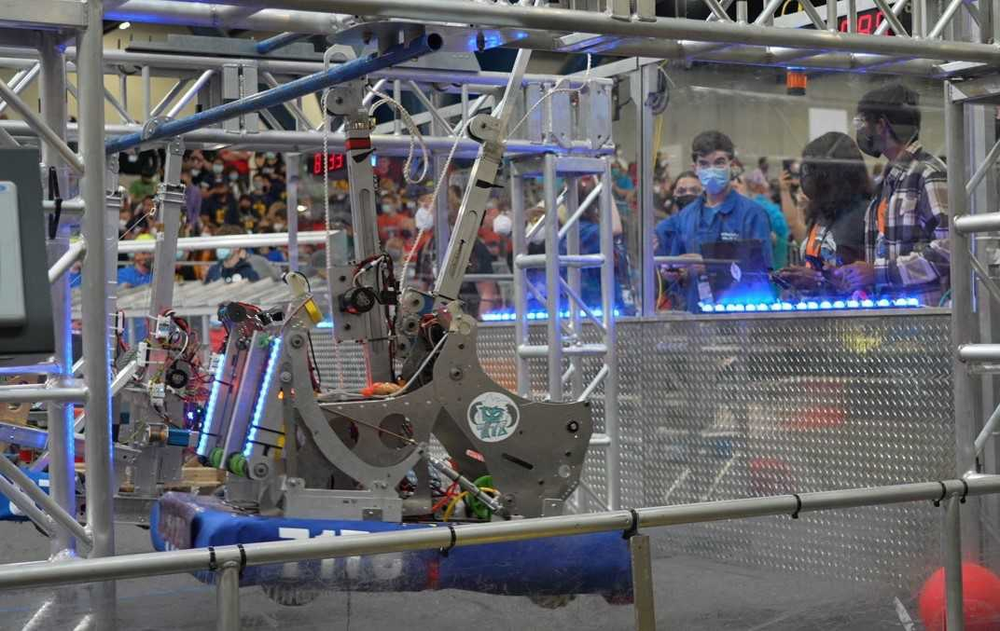
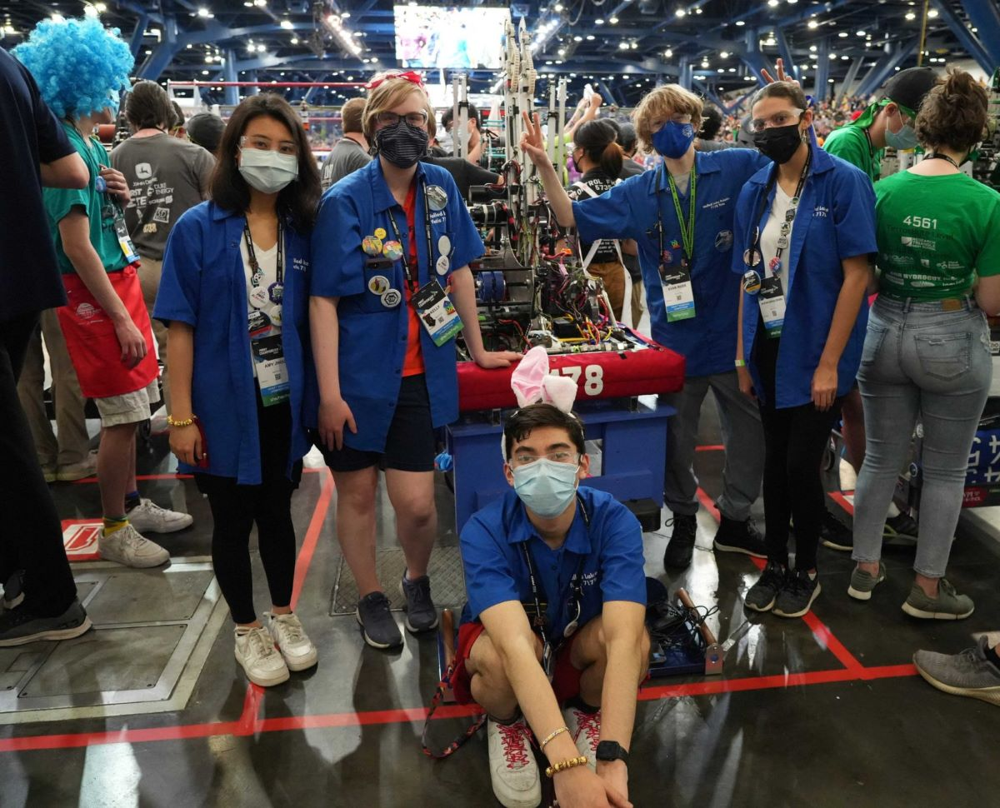
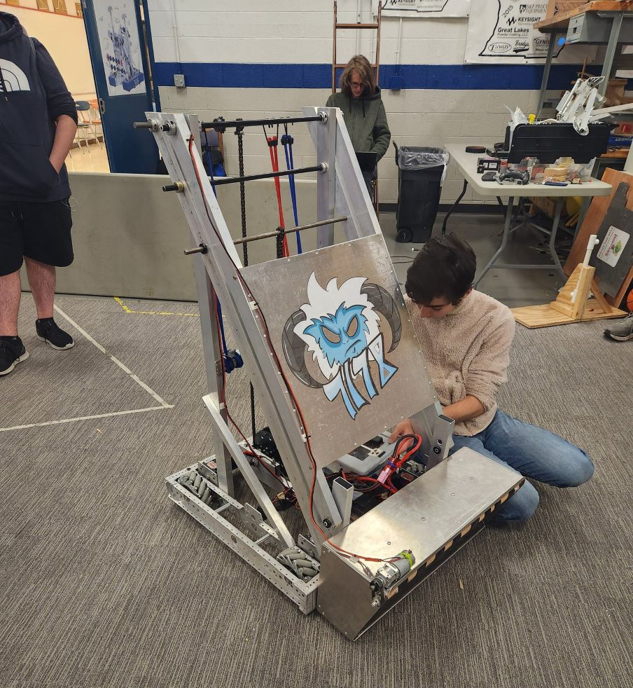
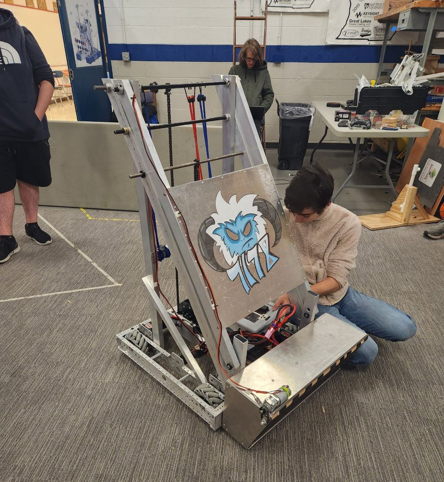
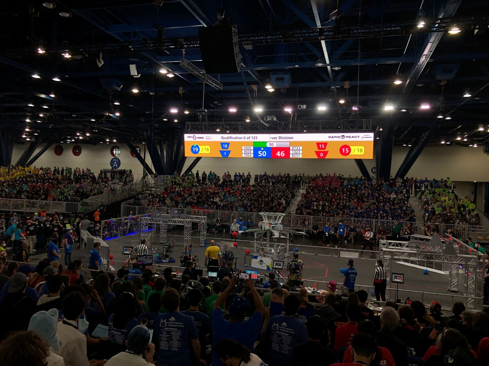
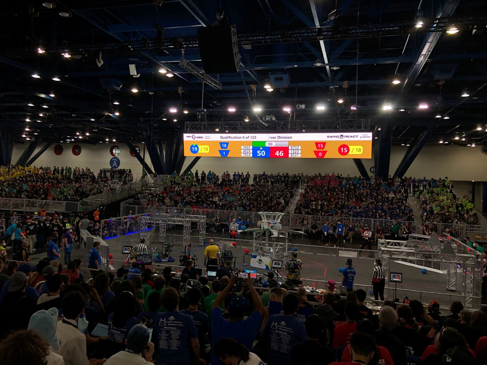

About The Team
Team 7178, otherwise known as the Yetis, is a Walled Lake Robotics team. There was one team
that originated in 1999, called the monsters.
In 2018 they split into two separate teams. The Yetis went their separate way from the Monsters and have
been thriving ever
since then. They consist of many individual sub teams, such as electrical, mechanical, and programming,
which are all student driven and mentor advised. 7178 consists of many students with different
experience levels,
meaning that anyone is able to join and can help out. In addition, our team fosters a learning
environment in which
the more experienced students and mentors teach the new students/inexperienced the skills that they need
to be successful
to keep our team thriving. With the variety of students 7178 has, they are able to maintain a well
rounded team with a good
robot each year.



 ❮
❯
❮
❯
Involvement in the community
Along with the competitions, 7178 is also involved in the community at both Walled Lake Central,
Western, and Northern.
When our team has the opportunity to be involved we take it. During our events we bring our beloved Tank
bot,
a robot that shoots t-shirts at football games, pep assemblies, the walled lake memorial parade, STEM
nights at
elementary schools, and other community gatherings. During Westerns Football games,
7178 cheers on the players and spreads knowledge about what we do as a team in robotics.
In addition when we partake in parades, we drive our Tank bot shooting merchandise into the crowds and
handing out
candy to children. On the other hand throughout our STEM nights, we display our robots, how they
function, their code,
and decorations (Fancy Lights). In conclusion, as a team we provide role models for future
scholars/younger
students that may find interests in being involved with Walled Lake Robotics.
Awards

|

|
| 2024 |
2024 |
- Team Spirit Award ~ Milford District Event
|
- Spirit of the Competition ~ Walled Lake Central
- Technical Excellence ~ Marian High School
|
| 2023 |
2023 |
- Creativity Award ~ Milford District Event
|
- Third Place ~ Marian Tournament
- Second Place ~ Seaholm Tournament
- Judges' Award ~ County Championship
- Finalist ~ County Championship
|
| 2022 |
2022 |
- Excellence in Engineering Award ~ Walled Lake District Event
- Finalist ~ Walled Lake District Event
- District Championship Winner ~ FIM District, Ford Field
|
- Third Place ~ Marian Tournament
- Beautiful Bot Award ~ Marian Tournament
- Second Place ~ Walled Lake Western Tournament
- Spirit of the Competition Award ~ Walled Lake Western Tournament
- Strategic Design Award ~ County Championship
- Finalist ~ County Championship
|
| 2021 |
2021 |
|
|
- Technical Excellence Award ~ County Championship
|
| 2020 |
2020 |
|
|
- Most Improved Award ~ Virtual Design Challenge
|
| 2019 |
2019 |
|
|
- Semi-Finalist ~ County Championship
- Technical Excellence Award ~ Oxford Tournament
- Judges' Award ~ Birmingham Tournament
|
| 2018 |
2018 |
- District Event Winner ~ Milford District Event
- Highest Rookie Seed Award ~ Troy District Event
|
- Technical Excellence Award ~ Brother Rice/Marian Tournament
- Second Place ~ Brother Rice/Marian Tournament
- Third Place ~ Birmingham Tournament
|

 





 

 
